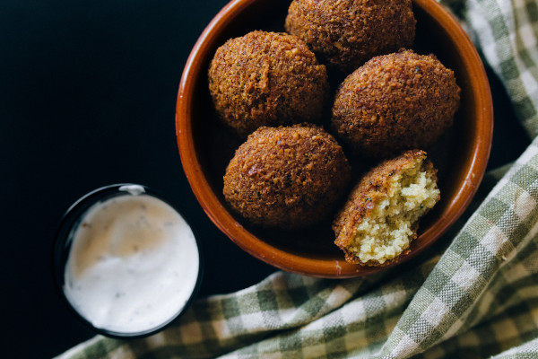

Falafel

Description
A delicious and healthy recipe from the Middle East.
A gluten free dish suitable for celiacs to serve in GF pita bread with a yoghurt sauce and vegetables.
Ingredients
- 1 can of chickpeas
- 1 clove of garlic
- 1 small onion
- 2 tablespoon olive oil
- 1/2 teaspoon salt
- 1 tablespoon parsley
- 2 teaspoons ground cumin
- 1/2 cup gluten free oats
Steps
- Mix all the ingredients in a food processor.
- When the mixture is smooth, shape it into small balls.
- Heat up some olive oil in a pan.
- Fry the falafels until they are brown on the outside.
- Serve with a salad or in a gluten free wrap or pita bread. Add a sauce and vegetables you have at home.
Bon appétit!
Return to Homepage